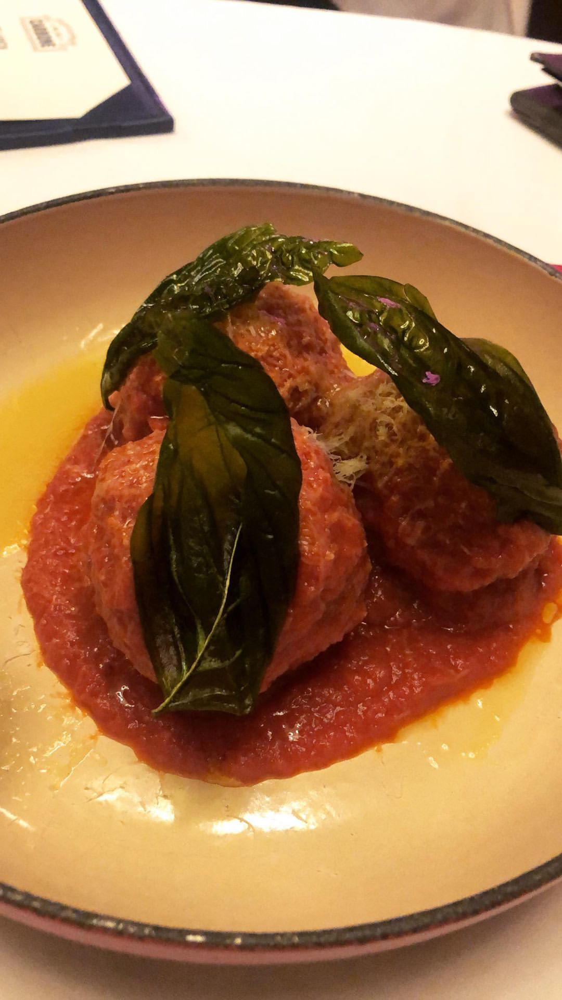
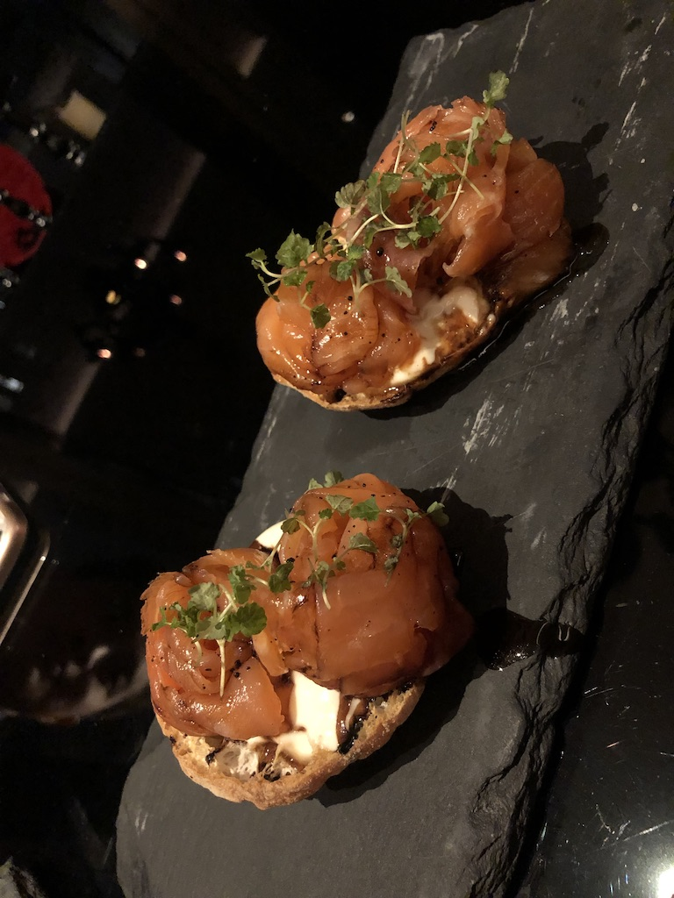
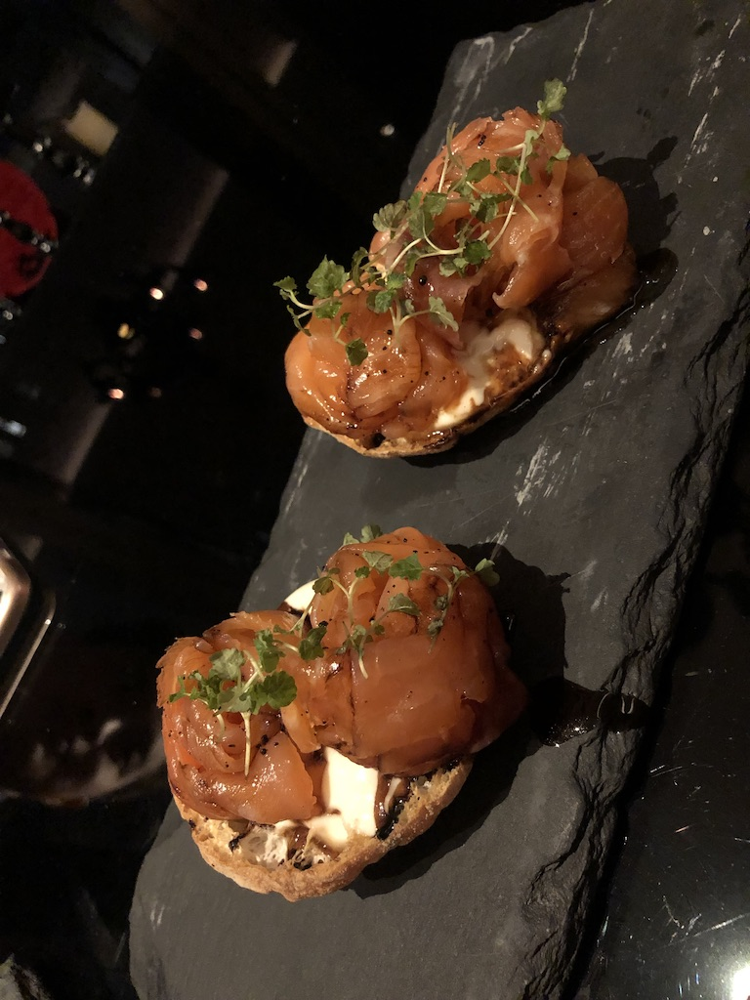

Western Restaurants
Western cuisine, also known as European cuisine, generally refers to the cuisines of Europe and other Western countries like the Americas as well. Hong Kong has a good variety of such cuisine, with many overseas restaurants opening their own location in Hong Kong. One of the more popular western cuisines in Hong Kong are Italian, American, and Spanish food.
Italian
208 Ducentto Otto


Location: 208 Hollywood Rd, Tai Ping Shan, Hong Kong
208 Ducentto Otto is one of my favorite Italian restaurants in Hong Kong. The restaurant's decor makes this modern restaurant a go to for fancier meals with family and friends. With a bar on the first floor and the restaurant seating on the second floor, 208 Ducentto Otto is a great location for good food and drinks. The pizzas served at the restaurant are made to the specifications of The Association Verace Pizza Napolentana, using on buffalo mozzarella from Campana and the freshest ingredients in a pizza oven shipped straight from Naples.
Pici
Location: G/F, 16 St Francis Yard, Wan Chai, Hong Kong
Pici is well know and prides themselves on their freshly made pasta daily. Although their pasta menu is limited, they serve fresh hand-made pasta dishes made with the finest ingredients which changes monthly. One of their most popular appetizers is the Homemade Meatballs which combines both pork and beef, which I think is absolutely delicious. Since their menus change from time to time, and their pastas are all homemade and fresh, Pici offers a good variety of authentic Italian food in cozy dining setting.
Carbone


Location: 9/F LKF Tower, 33 Wyndham St, Central, Hong Kong
Orginating from the New York City's Carbone, this Hong Kong location plays homage to Italian comfort food. Chef Mario Carbone brought Greenwich Village's Carbone all the way to Hong Kong with generous American sized portions. Their service and food surely live up to its reputation. Waiters toss salads, carve Parmesan cheese from the giant wheel, and present their dessert cart all tableside, so restaurant goers get a chance to see everything in action.
Carbone's signature dish includes the spicy vodka rigatoni as well as Mario's meatballs. The vodka rigatoni is my absolute favorite at this restaurant. The pasta is perfectly cooked to al dente and you get a little kick from the chili peppers that add the "spice". Although the price is a little steeper, I think that Carbone is definitely worth it and I will be back again for that spicy vodka rigatoni.
American
Kinship
Location: 2 Shelley Street, LL Tower, Central Hong Kong
At Kinship, guests can enjoy American inspired dishes and dine in an elegant yet relaxing atmosphere. With the open kitchen concept and the idea of "family", where friends and family can gather for a casual meal, chefs Arron Rhodes and Chris Grare have come up with Kinship and its farm-to-table concept. This means all the ingredients are locally sourced.
My experience at Kinship was extremely enjoyable. All the dishes were very good, but I personally liked the burnt onion risotto and the sticky pork belly. Both dishes have such unique flavors that I haven't seen at other similar restaurants before.
Spanish
Supergiant Tapas & Cocktail Bar

 

Location: 3/F, Mira Moon Hotel,, 388 Jaffe Rd, Causeway Bay, Hong Kong
Located in Mira Moon Hotel in Wanchai, Supergiant Tapas and Cocktail Bar is the go-to place for sharing traditional spanish dishes. They offer a larger variety than the usual tapas restaurants, including pastas, risottos and meats from the grill.